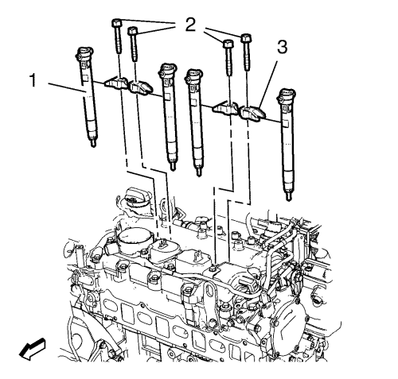

Montaje de los inyectores de combustible
Herramientas especiales
| • | EN-47632 Herramienta de limpieza . |
| • | EN-48559 Caperuzas protectoras de válvula de inyección . |
Si desea informarse sobre herramientas regionales equivalentes, consultar Herramientas especiales .

Nota: Utilice los dos lados de la herramienta de limpieza EN-47632: uno para soltar la suciedad y el otro para quitarla.
- Limpie las superficies de sellado con la herramienta de limpieza EN-47632.
Precaución:Consulte Precaución con las fijaciones en la sección Prólogo.

- Monte los 4 tornillos de retención de la tapa del árbol de levas. Apriete los tornillos hasta 10 N·m (89 lib. pulg.).
- Retire las 4 caperuzas protectoras EN-48559.
- Monte los 4 inyectores de combustible (1).
- Monte los 4 soportes de los inyectores de combustible (3).
- Monte los 4 tornillos de retención del soporte de la válvula de inyección de combustible (2) y apriételos a 14 N·m + 110° (10 lib. pie) + 110°.
| © Copyright Chevrolet. All rights reserved |